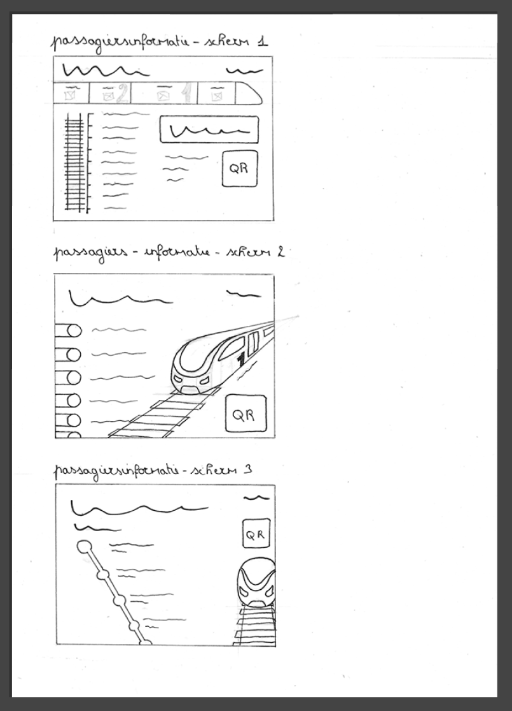
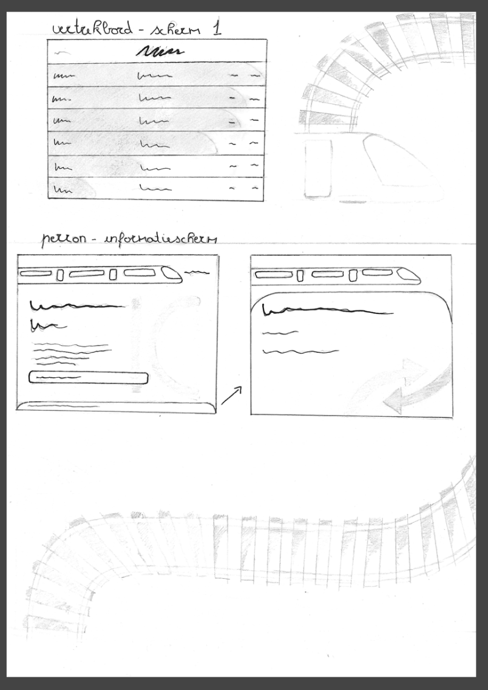
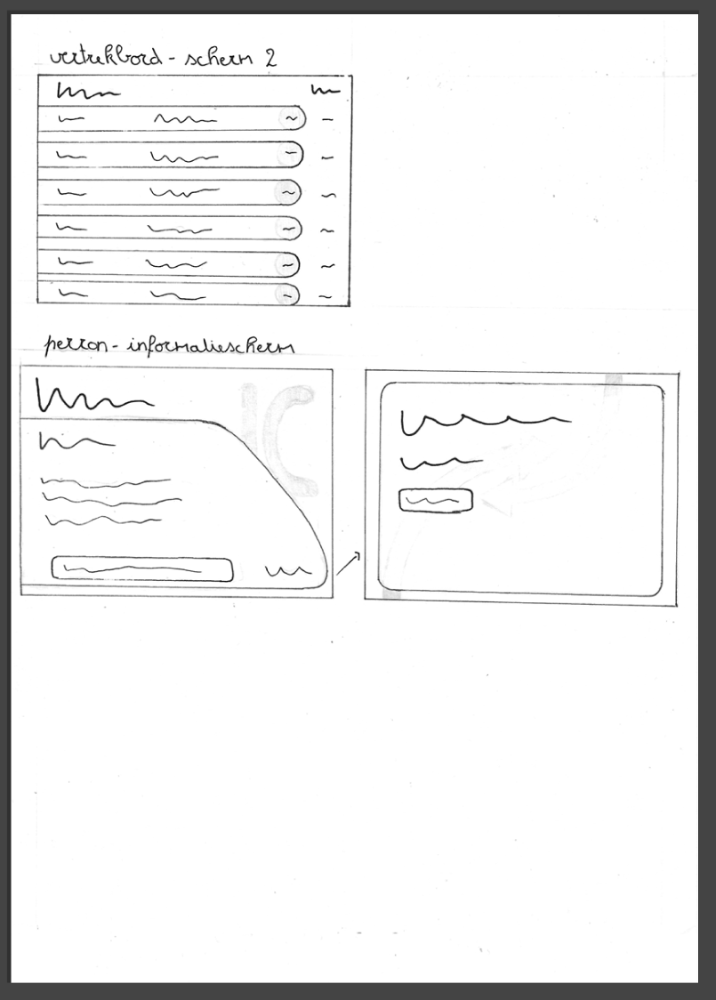
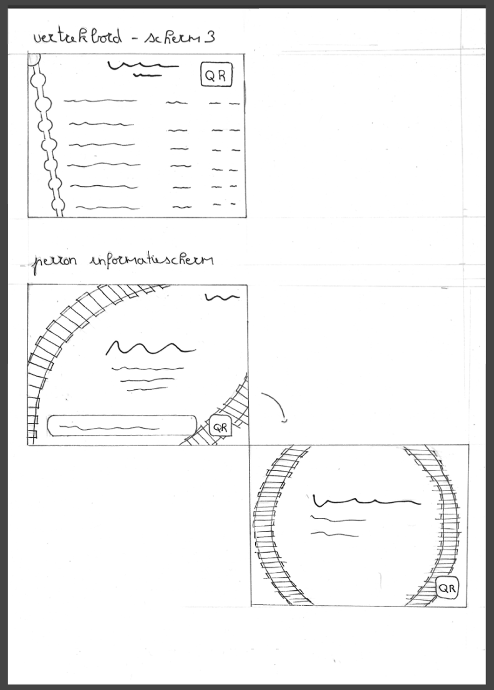

Week 1
Low-fi wireframe schetsen
Deze week ben ik begonnen met het ontwerpen van mijn low-fi wireframe.
Om mijn ideeën te ordenen, heb ik eerst een mindmap gemaakt waarin ik alles noteerde wat in mij opkwam:
handige functies, mogelijke indelingen, maar ook zaken die ik liever wilde vermijden in mijn ontwerp.
Dit hielp me om een duidelijk beeld te krijgen van de richting waarin ik wilde gaan. Daarna begon ik met het
maken van de eerste schetsen. Zoals bij echte schetsen ging dit met veel gommen, aanpassen en opnieuw tekenen.
Toen ik tevreden was met de lay-out, ben ik met een fineliner over mijn potloodschetsen gegaan om ze
netter en duidelijker te maken. Zo kreeg ik een overzichtelijke low-fi wireframe die als basis dient voor
de volgende fases van het project.



